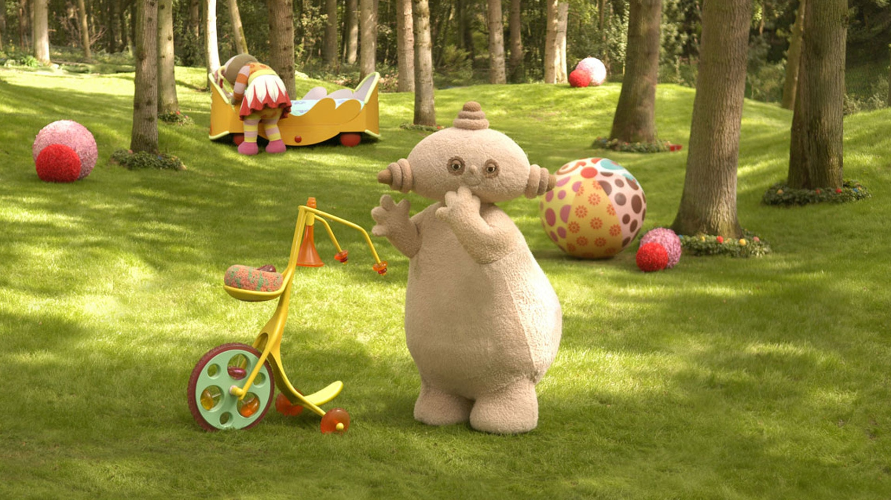

IN THE NIGHT GARDEN
MY FIRST WEBSITE
Intro
:
html

- cat meow meow
- dog bark bark
- lion roar roar
Do you know the characters from In the Night Garden?
★ Igglepiggle! ★
Igglepiggle is physical and energetic - a well-loved teddy always jumping and bouncing around. He's curious and adventurous, but also vulnerable and modest. Despite his energy he is often in need of reassurance and comfort, which he gets from his best friend Upsy Daisy and his red blanket.
★ Upsy Daisy! ★
Upsy Daisy is a happy and optimistic dolly. She loves nothing more than to dance through the garden and often convinces other character to join in. One of her favourite things is her bed, which has a mind of its own and can often be seen chasing her around the garden.
★ Makka Pakka! ★
Makka Pakka lives in a little cave at the edge of the garden and likes nothing more than collecting and washing little stones - he'll often wash the faces of the other characters too. He travels around the garden pushing his Og-Pog vehicle, which carries his soap and sponge, his uff-uff dryer and his special trumpet.
★ The Tombliboos ★
There are three Tombliboos - Unn who is red and green, Ooo who is brown and pink and Eee who is pink and yellow. They live together in an extraordinary bush, where they enjoy stacking and sorting their special blocks, banging their drums and making tunes on their piano.
★ The Pontipines and The Wottingers ★
The Pontipines are a large family of 10 that live in a semi-detached house at the foot of a tree. There are 8 children, 4 of which are girls and four of which are boys and they are always dressed in red. Their next-door neighbours are the Wottingers, who also have 8 children and they are always dressed in blue.
★ The Haahoos ★
The Haahoos are five enormous pillowy creatures who roam about the garden at a leisurely pace that is entirey their own. They are sedate and gentle, but are so big they often stop the Ninky Nonk in its tracks - no small feat!
★ The Ninky Nonk and The Pinky Ponk ★
The Ninky Nonk and the Pinky Ponk are the only forms of transport for the characters in the garden, but they couldn't be more different! The Ninky Nonk is a funny kind of train which careers through hedges and clambers up and down trees all over the garden. The Pinky Ponk is a kind of airship which glides gracefully in the air, providing wonderful aerial views of the garden for all those on board.
★ The Tittifers ★
The Tittifers are brightly coloured birds that sing as individuals throughout the programme, and then together form a beautiful harmony as a signal for bedtime. #WildBrain #InTheNightGarden #VideosForKids